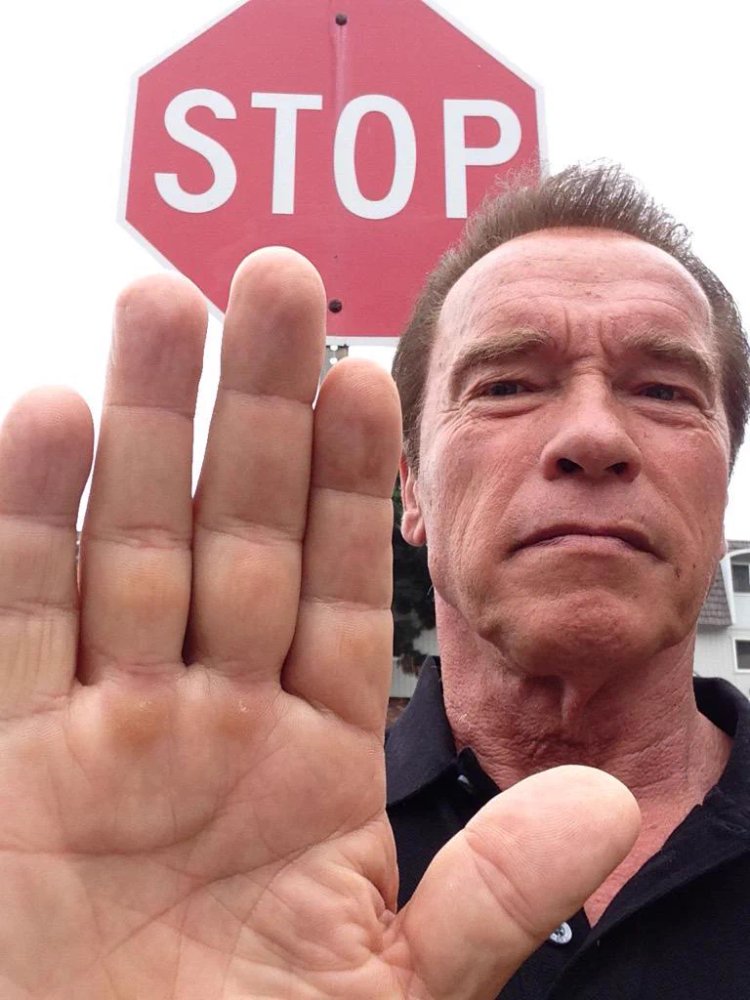

The Escalator Walking Situation Is Insane
For too long normal people have suffered in the shadow of those who step beyond courtesy on escalators. It has gone from being a personal quirk, something some people do to relieve themselves of the pressure of daily lives, all the way to being completely accepted in society. More than that - they want us, normal escalator standers, to be the ones yielding to their needs and their desires by taking up the right side of an escalator. Enough, I say. For long enough we have suffered. For long enough we have taken this disrespect. For long enough we have been marginalised to the right side of an escalator. An escalator is fundamentally an invention. Inventions have rules. You do not put a toaster in a bath. You do not drink from a dishwasher. Therefore, why should you walk up and down escalators? They will carry you on their own. I believe this to be the fundamental rule of society, rule of the planet and I believe that anyone who does not yield to this rule is showing themselves as merely ignorant.
I love humanity. I love society. I am a peaceful escalator stander. I stand, not so that other people can walk, but so that other people can stand. It is within my personal limits and my legal limits to stand on an escalator. Why might I walk up or down escalators? It is not ethical, I tell you. The founding fathers did not die for this. They died for freedom, not lawlessness. The rule of law must apply here, we must do something about the walkers. Now, what might we do? I propose reeducation camps, where they are taught how to respect inventions, how to be good people and how to not disrespect other members of society. Why might we do this? It's simple, we must preserve order. It's out of love for the walkers. Our fathers did not walk upon escalators. Their fathers did not walk upon escalators. Moreover, may I add - not a single one of the apostles in the Bible walked up or down escalators. It is completely unnatural to do so, by which I mean it wasn't done in the past, therefore it should be outlawed.
I believe we must be together, remaining undivided, to make a stand on this issue. Because this is an issue, that has for way too long plagued humanity. This is a tragic byproduct of late capitalism, the very system that forces the individual to believe their time is a currency. Our attention is a currency. Our time is a currency. We are endorsed to do things quickly, so that we may be able to do more with our lives. Fundamentally, our choices have also become a form of currency, that the market wants to buy with advertisements. I say to that - why live in a system, where more and more things about us are becoming currency - until we, ourselves, become a form of currency. That is what is utterly dehumanising about the world we live in. If you earn some money, you could surely squeeze in an extra shift to make more money. I forgot what I was writing about as I want to meet the word threshold for a serious manifesto. And how do you get to that shift quickly? By. Walking. On. Escalators. It is all symptomatic. It all comes from walking on escalators. All of this world's problems stem from walking up and down escalators.

This ends now. We must not yield to conformism. We must fight for ourselves. Not physically - physical fights are for the spiritually weak. We must resist the urge to do what is unethical, unfortunately legal, and completely harmless to everyone else - we must not, ever, under any circumstances, walk on escalators. Picture this - you're giving birth. You have to get to the hospital quickly. There is an escalator in front of you. Let me tell you one thing - the baby waited nine months, it can wait an extra five seconds that you would have saved rushing up or down that escalator. None of our problems can be solved with walking up or down escalators. But problems can be created by doing so. And that is why, I posit, we must make it clear, that our movement, our belief system, has exactly three rules. Those rules must be respected far and wide, they must never be broken (unless they're broken by anyone who's a member of the Escalator Peace Advocates Movement board), and whenever anyone breaks them - that poor wrongdoer must be quickly reported.